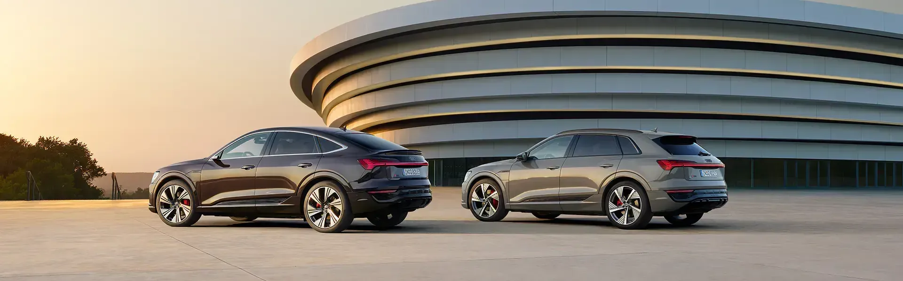

Bemutató az Audiról
A haladás technikája
Az AUDI AG a sportos járműveket, a kiváló gyártási minőséget és a progresszív dizájnt jelenti – „Vorsprung durch Technik”. Az Audi csoport a világ egyik vezető prémium autógyártója. A vállalat lépésről lépésre valósítja meg stratégiáját, hogy meghatározó szerepet játsszon a mobilitás új korszaka felé vezető átalakulásban.
Két legnépszerűbb alapmodell az Audi kínálatában

Audi A3

Audi A5
| Szempont | Audi A3 | Audi A5 | Különbségek |
|---|---|---|---|
| Méretek és formatervezés | Kompakt autó, kisebb méret | Közepes méretű prémium kupé vagy sportback | Az A3 kisebb, könnyebb, városi közlekedéshez praktikusabb, míg az A5 nagyobb és elegánsabb, sportosabb megjelenésű. |
| Teljesítmény és motorválaszték | 1.0-2.0 literes motorok, benzines, dízel, hibrid változatok | 2.0-3.0 literes motorok, erősebb verziók | Az A5 erősebb motorválasztékkal és sportosabb teljesítménnyel rendelkezik, különösen a 3.0 literes motorokkal. |
| Belső tér és kényelem | Tágas, de egyszerűbb kialakítás | Prémium anyagok, tágasabb belső tér | Az A5 magasabb szintű kényelmet és luxust kínál, elegánsabb anyaghasználat és technológiai extrák jellemzik. |
| Árkategória | Alapmodell árai kedvezőbbek, kb. 10-12 millió Ft | Magasabb árfekvés, kb. 15-20+ millió Ft | Az A5 drágább, mivel nagyobb és prémiumabb jármű, magasabb alapfelszereltséggel és extrákkal. |